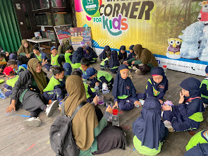
Paket 01
Eksperimen Minuman Bunga Telang
Rp10.000 / kelompokTermasuk alat dan bahan eksperimen serta pemandu.
Let's Education at Naureen Mini Garden
Wisata edukasi yang asri dan menyenangkan untuk mengembangkan kesadaran lingkungan serta kreativitas anak melalui pengalaman langsung.
Wisata edukasi Naureen Mini Garden
Naureen Mini Garden (NMG) menghadirkan kunjungan edukasi yang menyenangkan dan interaktif untuk peserta didik dari jenjang TK hingga SMA. Peserta dapat mengenal tanaman dan hewan, mencoba aktivitas kreatif, serta belajar merawat lingkungan bersama pemandu.
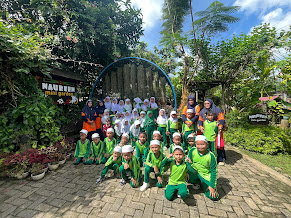
Cerita kunjungan sekolah
Kunjungan edukasi Naureen Mini Garden telah diikuti oleh sekolah dari berbagai jenjang.


Termasuk dalam kunjungan edukasi
Aktivitas kreatif dan pengalaman satwa
Pilih kegiatan sesuai minat dan usia peserta. Harga paket merupakan biaya tambahan dari tiket masuk.

Paket 01
Termasuk alat dan bahan eksperimen serta pemandu.
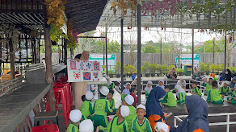
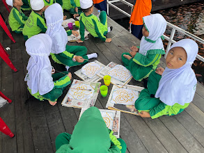
Paket 02
Termasuk pemandu, kain sapu tangan dengan sketsa, pewarna, dan alat membatik. Hasilnya dapat dibawa pulang.
Catatan: pihak sekolah menyiapkan koran sebagai alas membatik.
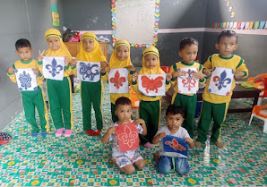
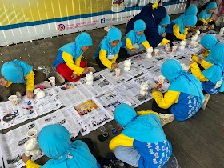
Paket 03
Termasuk pemandu, celengan gipsum, contoh mewarnai, cat warna, air, dan kuas. Celengan yang telah diwarnai dapat dibawa pulang.
Catatan: pihak sekolah menyiapkan koran sebagai alas dan gelas plastik berisi air untuk mencuci kuas.
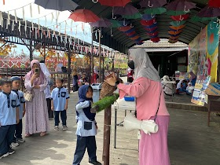
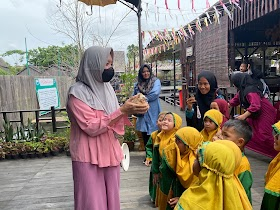
Paket 04
Termasuk pemandu, pengenalan lebih lanjut tentang burung hantu dan landak mini, serta kesempatan berinteraksi langsung dengan keduanya.
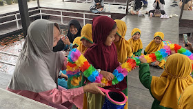
Paket 05
Termasuk pemandu. Anak-anak dapat berpartisipasi selama pertunjukan sulap berlangsung.
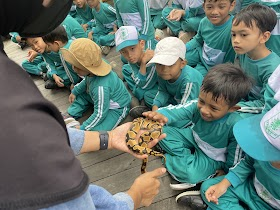
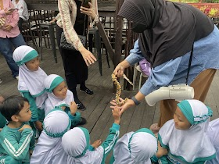
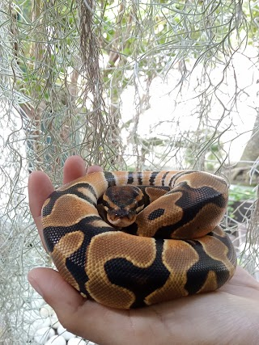
Paket 06
Termasuk pemandu dan pengenalan lebih lanjut tentang ular Ball Python. Anak-anak dapat berinteraksi langsung dengan ular didampingi pemandu.
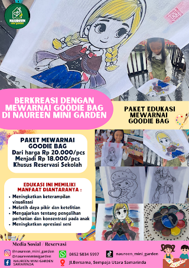
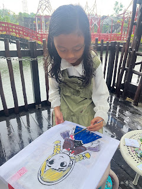
Paket 07
Termasuk pemandu, tas karakter, cat warna, air, dan kuas. Tas yang telah diwarnai dapat dibawa pulang.
Catatan: pihak sekolah menyiapkan koran sebagai alas dan gelas plastik berisi air untuk mencuci kuas.
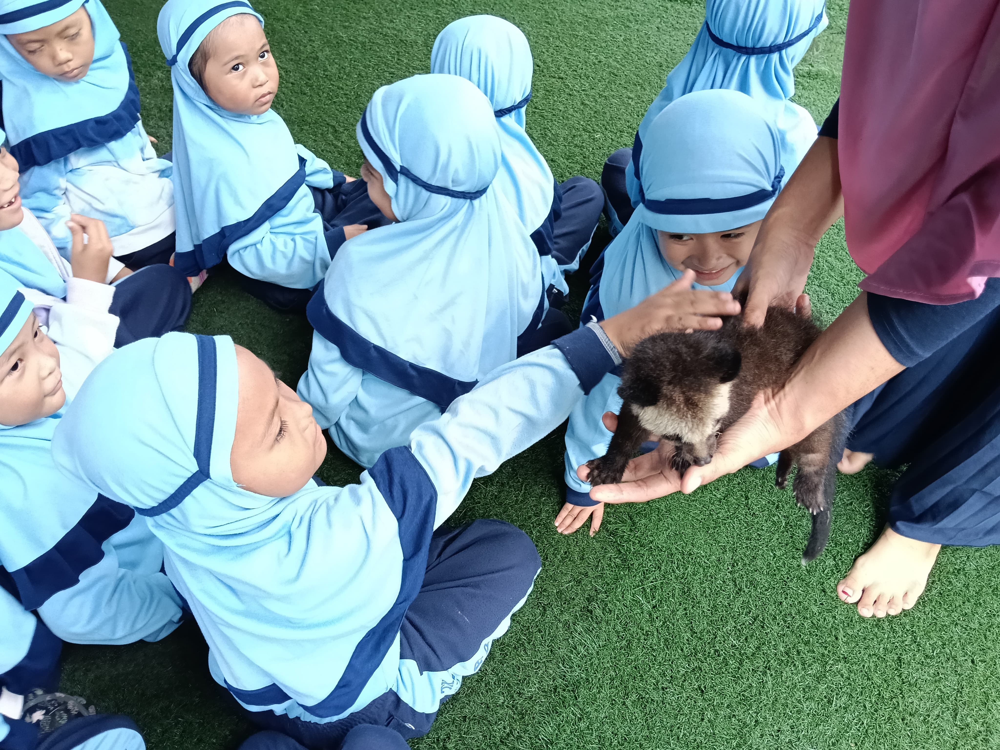
Paket 08
Termasuk pemandu, pengenalan lebih lanjut tentang musang bulan, dan kesempatan berinteraksi langsung dengan hewan.
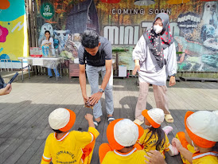
Paket 09
Termasuk pemandu, pengenalan lebih lanjut tentang kura-kura Sulcata, dan kesempatan berinteraksi langsung dengan hewan.
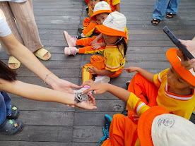
Paket 10
Termasuk pemandu, pengenalan lebih lanjut tentang sugar glider, dan kesempatan berinteraksi langsung dengan hewan.
Belajar, mencoba, dan berkreasi
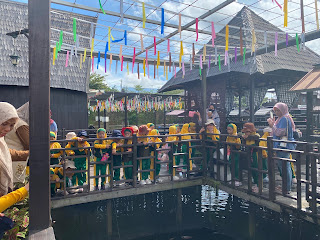
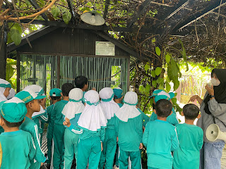
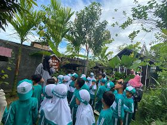
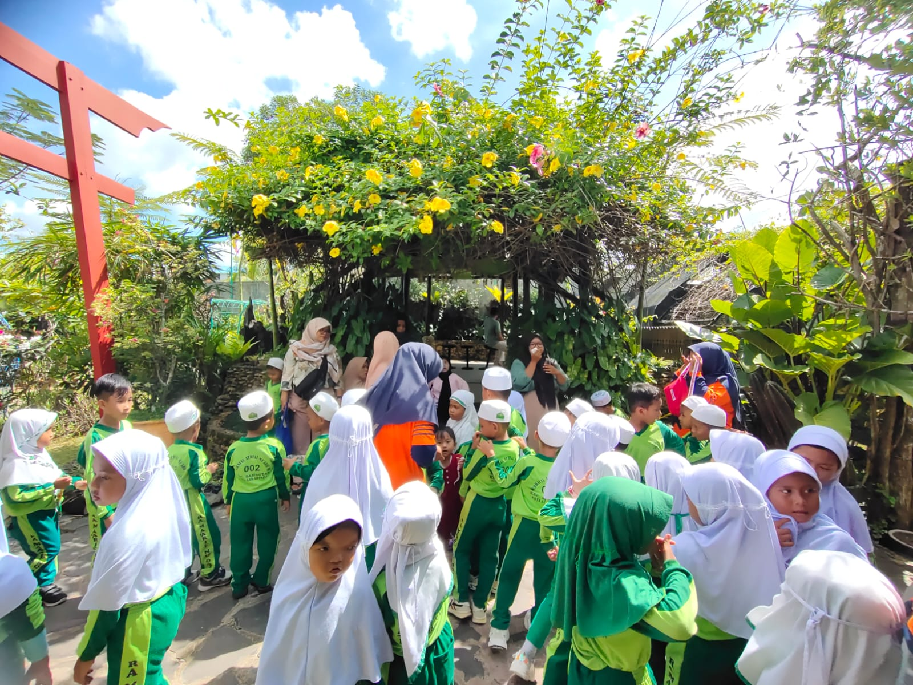
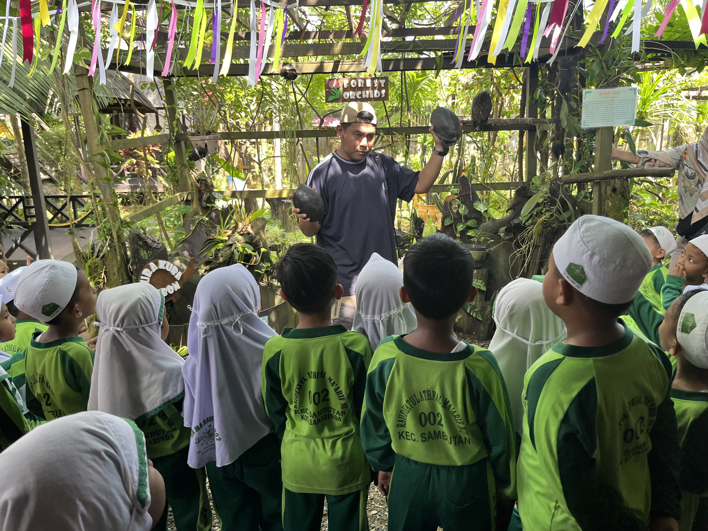
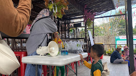